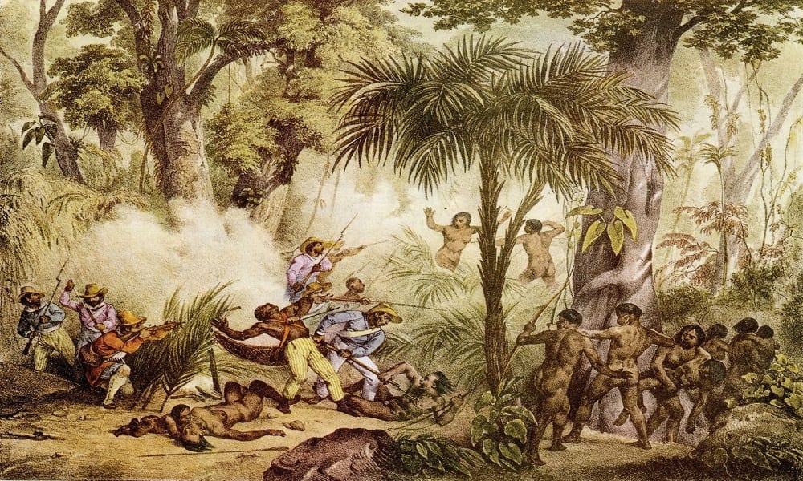
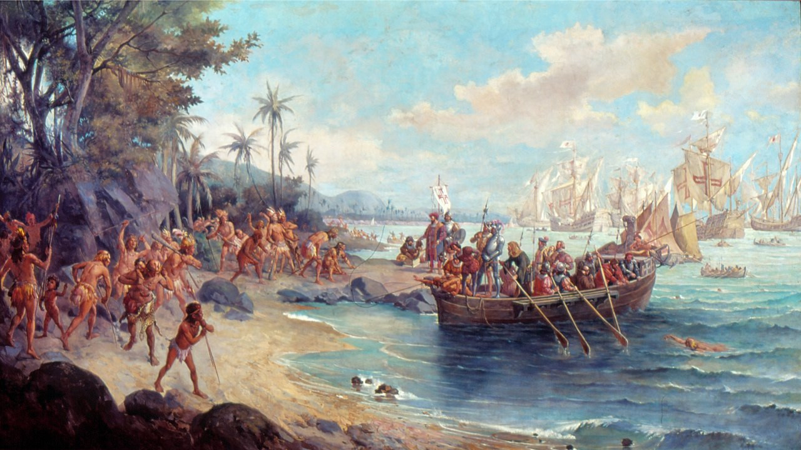
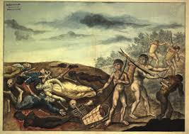
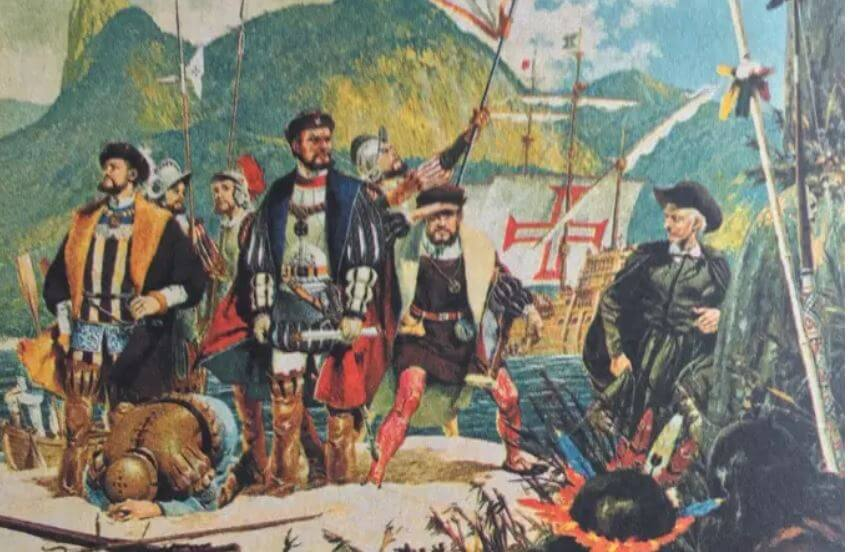

Fauna
Fauna
Mata Atlântica como local de resistência
Durante o período da colonização, a Mata Atlântica também foi cenário de conflitos e resistência entre povos indígenas e os portugueses. Os indígenas utilizavam a floresta como forma de proteção, sobrevivência e defesa de seus territórios diante da exploração e da ocupação colonial.
13/05/2026

Durante a exploração portuguesa no Brasil, o bioma Mata Atlântica foi cenário principal de muitos embates entre povos nativos e portugueses. A relação entre ameríndios e colonizadores mudou drasticamente a partir do momento em que os europeus decidiram tomar posse definitiva das terras do Novo Mundo, e então os habitantes originários passaram a ser vistos como um obstáculo para a conquista territorial, fonte de mão de obra fácil e ameaça real à segurança das colônias. .
Assim, a ideia de escravização e destribalização passou a ser normalizada, tornando essas populações dizimadas, espoliadas e escravizadas impiedosamente, quando não eram protegidas pela Igreja Católica para sua educação, na tentativa de torná-las “menos selvagens”. Enquanto os portugueses viam a floresta como um grande recurso de enriquecimento, os povos originários encontravam nela meios de fuga da exploração europeia. Dessa maneira, iniciavam-se grandes disputas entre os ameríndios e os europeus.
Um dos primeiros confrontos entre nativos e exploradores foi a Confederação dos Tamoios, uma aliança formada por diferentes povos da família Tupi — que até então viviam separados — e que habitavam especialmente as regiões do Rio de Janeiro e São Paulo, entre 1554 e 1567. Nesse período, eles se alinharam aos franceses da França Antártica, que buscavam manter uma relação um pouco mais amigável com os habitantes locais, oferecendo trocas de interesses. Afinal, como os povos nativos poderiam competir com os portugueses, que possuíam armas muito mais violentas? Diante disso, surge a relevância dessa união entre grupos tão distantes, já que os franceses forneceram armas e apoio militar. Entretanto, essa ajuda não foi suficiente para vencer a violência das expedições portuguesas, que destruíram aldeias, mataram milhares de pessoas e promoveram sua escravização.
Há quem pense que a resistência dos povos originários foi em vão, já que a colonização conseguiu se expandir e a exploração tomou proporções grandiosas. Porém, esse pensamento logo é quebrado quando, ainda hoje, se fala sobre a resistência indígena, enquanto sua cultura permanece como uma das bases da identidade brasileira. Além disso, muitos de seus conhecimentos continuam sendo estudados, principalmente aqueles ligados a uma vida mais conectada e respeitosa com a natureza.


